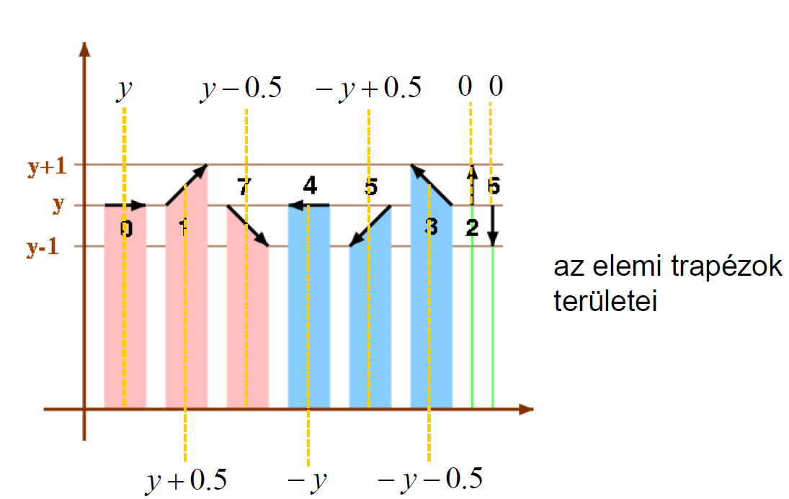
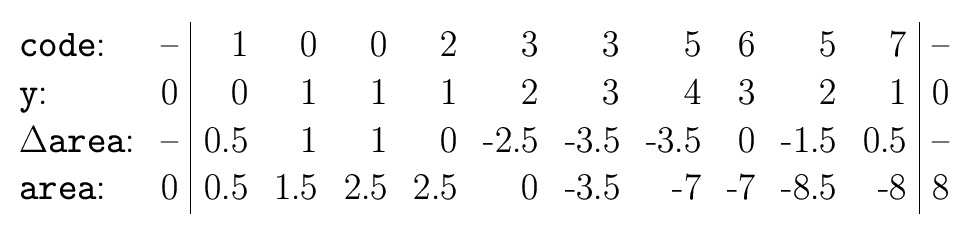
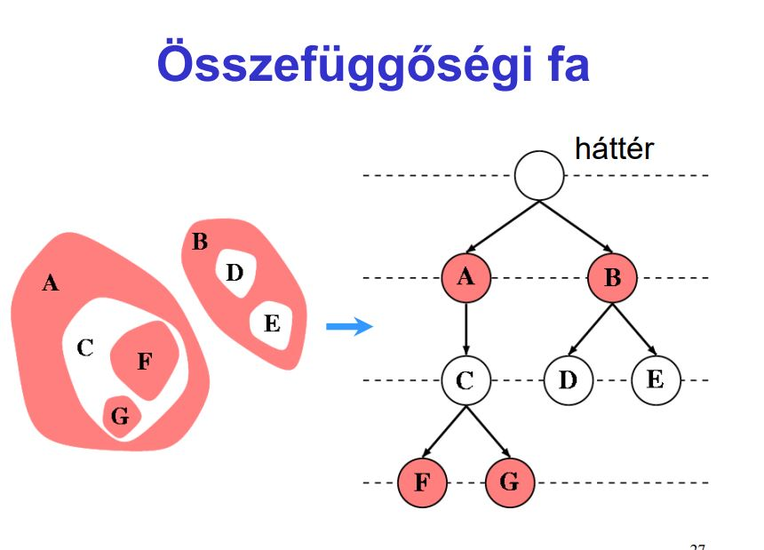
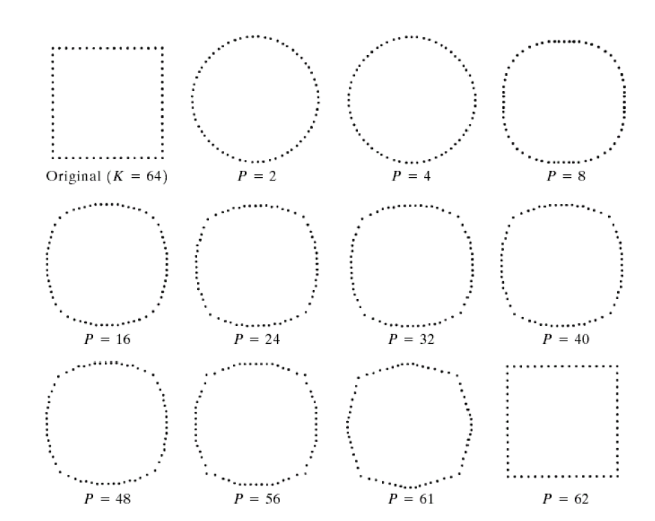
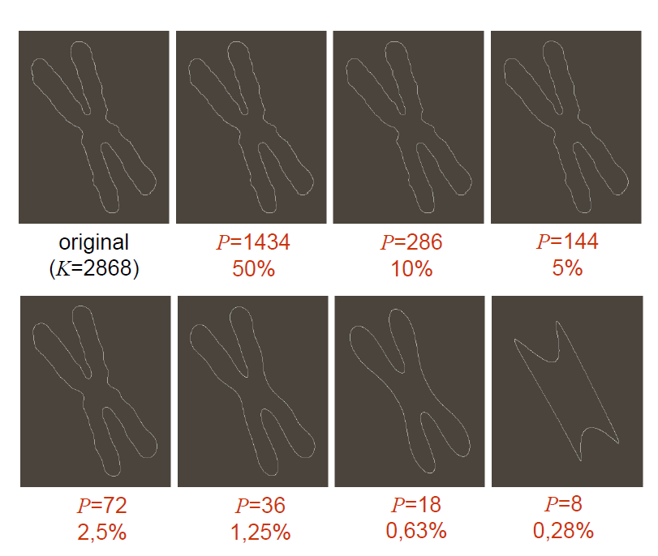

Az alak/forma megítélésének fontos szerep jut a látásunkban.
Az alak (shape) nem bír egzakt matematikai definícióval
A szegmentálást követően az objektumok kontúrjaiból vagy foltjaiból (attól függően, hogy határ- vagy régió-alapú szegmentálást vetettünk-e be) számos alakleíró jellemzőt vonhatunk ki.
Hangsúlyozandó, hogy itt már elszakadhatunk a digitális képektől, **némelyik jellemző
csak egy szám**, mások pedig összetett struktúrák is lehetnek.
Az alakleíró jellemzőket három osztályba soroljuk. (Határ, Régió, Transzformációs)
lánckód, alakleíró szám
kerület, terület, kompaktság, cirkularitás
közelítés poligonnal
parametrikus kontúr, határvonal leíró függvény
meredekségi hisztogram
görbület, energia
strukturális leírás
Az alakzat határpontjait követi/láncolja az óramutató járásával ellentétes irányban.
Határpont: Az alakzat olyan pontja, melynek van az alakzathoz nem tartozó 8- ill, 4-szomszédja.
Különböző kezdőpontból más lánckód jöhet ki!
Pozitivumok:
Invariáns a forgatásra, ha a szög , eltolásra
Gyors algoritmus, eltolás-invariáns
kompakt
Hátrányok:
Zaj érzékeny,
nem skála-invariáns
pontosság legfeljebb pixelnyi lehet
Különbségkód: a lánckód első deriváltja, a szomszédok elemek közötti elmozdulások száma
Normalizálás: Addig permutáljuk a különbségkódot, amíg a legkisebb értékű kódot kapjuk.
Alakleíró szám: A normalizált különbségkód (NEM FÜGG A KEZDŐPONT VÁLASZTÁSTÓL)
A kerület és a terület két gyakran bevetett alakleíró jellemző. Mindkettő származtatható a lánckódból is.
8-as lánckód esetén:
kerület = gyök(2) * (páratlan elemek száma) + páros elemek száma a lánckódban
4-es lánckód esetén:
kerület = lánckód rendje (hossza)
poligon területe 8-as lánckód esetén:
számontartunk egy y-t, ami kezdetben 0. Ehhez ha a lánckódban lévő következő szám “felfele” mutat hozzáadunk 1-et, ha “lefele”, akkor kivonunk 1-et
a területváltozást szintén a lánckódban következő szám iránya határozza meg (y alapján), ahogy az alábbi képen is látszik
a területet úgy kapjuk, hogy folyton összeadogatjuk a területváltozásokat, és a végén vesszük az abszulútértékét


kompaktság = (kerület)^2 / terület
cirkularitás = terület / (kerület)^2
görbület: a határhoz rajzolt érintőkör sugarának reciproka
Pl. A súlypontnak a határtól vett távolságát a szög függvényében fejezi ki.
Nagyban függ az alakzat méretétől és a határon vett kezdőponttól. normalizárásra szorul.
Csillag-szerű objektum:
Van olyan pontja, amelyből induló tetszőleges irányú sugár a határt egyetlen pontban metszi.
A határ-alapúakhoz hasonlóan, számos régió-alapú alakleíró jellemzőt javasoltak.
befoglaló téglalap, rektangularitás
főtengely, melléktengely, átmérő,
excentricitás, főtengely szöge
konkávitási fa, partícionált határ,
vetületek, törés-költség
topológiai leírások, Euler-szám,
szomszédsági fa,
váz,
momentumok, invariáns momentumok
álló befoglaló téglalap: az objektum koordinátáinak minimumai és maximumai megadják az álló befoglaló téglalap csúcsait.
minimális befoglaló téglalap
rektangularitás: Azt mondja meg, hogy az objektum „bedobozolásakor” mennyi a tárgy és a „levegő” által elfoglalt területek aránya, tehát —> alakzat területe / minimális befoglaló téglalap
főtengely: az alakzaton belül haladó leghosszabb egyenes szakasz
melléktengely: az alakzaton belüli, a főtengelyre merőleges leghosszabb egyenes szakasz
átmérő: a határ két legtávolabbi pontját köti össze. A főtengely hossza általában nem egyezik meg az átmérővel (csak a
konvexeknél)
excentritás: a fő- és melléktengely hosszaránya:
főtengely szöge: a főtengely és az x-tengely által bezárt szög
konvex burok: az alakzatot tartalmazó minimális konvex alakzat
konvex kiegészítés: a konvex burok és az alakzat különbsége
konkávitási fa: A fa gyökere a kiindulási alakzat, az első szinten a konvex különbség alakzatai helyezkednek el, melyekre a faépítést rekurzív módon folytatjuk.
partícionált határ: A konvex burok határát osztja fel részekre.
vetületek: A bináris képekből képzett nem-negatív egészekből álló (1D) tömbök.
törés-költség: A vetületek továbbragozása, kiszűri a zajos képek oszlopaiban lévő „magányos” objektumpontokat.
topológiai leírások
bináris kép: kétféle érték lehet benne, az 1-es az alakzatot (komponenst) reprezentálja feketével, míg a 0-s a hátteret(lyukakat) fehérrel
komponens: maximálisan összefüggő fekete halmaz
üreg: a negált kép egy véges komponense
Euler-féle szám: egyetlen egész szám komponensek száma - üregek száma.
Rengeteg képre lehet az ugyanaz. Valamit elárul a képről, de önmagában keveset.
összefüggőségi-fa: A bináris képekhez rendelt irányított gráf 
minden egyes csúcs megfelel a kép egy (fehér vagy fekete) komponensének,
a gráf tartalmazza az (X,Y) élet, ha az X komponens „körülveszi” a vele szomszédos Y komponenst
A váz egy gyakran alkalmazott régió-alapú alakleíró jellemző, mely leírja az objektumok általános formáját.\
Alapvetően 3-féleképp határozhatjuk meg:
a vázat az objektum azon pontjai alkotják, melyekre kettő vagy több legközelebbi határpont található.
Az objektum határát (minden pontjában) egyidejűleg felgyújtjuk. A váz azokból a pontokból áll, ahol a tűzfrontok találkoznak és kioltják egymást. (Feltételezzük, hogy a tűzfrontok minden irányban egyenletes sebességgel, vagyis izotropikusan terjednek.)
A vázat az objektumba beírható maximális (nyílt) hipergömbök középpontjai alkotják. Egy beírható hipergömb maximális, ha őt nem tartalmazza egyetlen másik beírható hipergömb sem.
Invariáns az eltolásra, elforgatásra és az uniform skálázásra.
Pro:
Egy szám
többszintű képekre is értelmezettek, invariánsak a főbb geometriai műveletekre
rotálás, eltolás, skálázás, tükrözés stb…
Bizonyos (centrális) momentumoknak geometriai jelentés is tulajdonítható, illetve fontos jellemzők kifejezhetők a segítségükkel, például súlypont.
Javasoltak viszont 7 ún. invariáns momentumot is (ld. 56. dia), amelyekhez nem
társíthatók különösebb jelentések, de a belőlük alkotott rendezett hetesek (vagy akár
hármasok, ha nem vesszük mindet figyelembe) jól jellemzik az objektumokat.
Ez egy transzformáción alapuló alakleírás
==Transzformáljuk (szigorúan 1D Fourier transzformációt alkalmazunk) a határ K darab mintavételezett pontjából képzett vektort. Az eredményül kapott vektor adja a Fourier leírást. (vagyis tartalmazza a Fourier együtthatókat, a transzformáció bázisfüggvényeinek súlyait)
Az alakzat rekonstrukciójához az inverz
Fourier-transzformációt kell végrehajtani.==
A K darab Fourier együtthatóból visszakaphatnánk torzítatlanul az eredeti mitnavételezett pontokat, az alakleíráshoz viszont
nem az összes súlyt, hanem csak egy részüket tartjuk meg, mindössze P<K darab
együttható alapján térünk vissza a képtérbe
ekkor a képtérben ismét K darab pontot kapunk vissza, de nem a kiindulás mintavételezettjeit.
Az együtthatók egy részének eldobásával kapott leírás
(a meghagyott együtthatók adják a jellemzést) voltaképpen egy veszteséges
tömörítés: kevesebb adattal tudjuk jól-rosszul közelíteni a kiindulásit.
Az alábbi kép azt mutatja, hogy hogy a 64 kontúrponttal mintavételezett négyzetre csak
sok együttható megtartásával tudunk négyzetfélét rekonstruálni.

A következő képen viszont tesztobjektum határa közel 3000 ponttal adott,
és már 36 együttható is visszaadhat 3000 pontot úgy, hogy azok jól közelítik a
kiindulási kontúrt.
